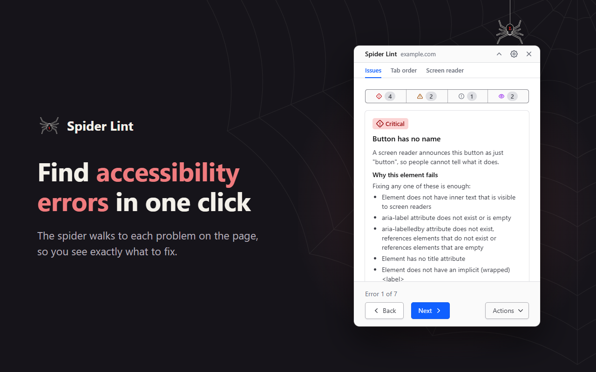
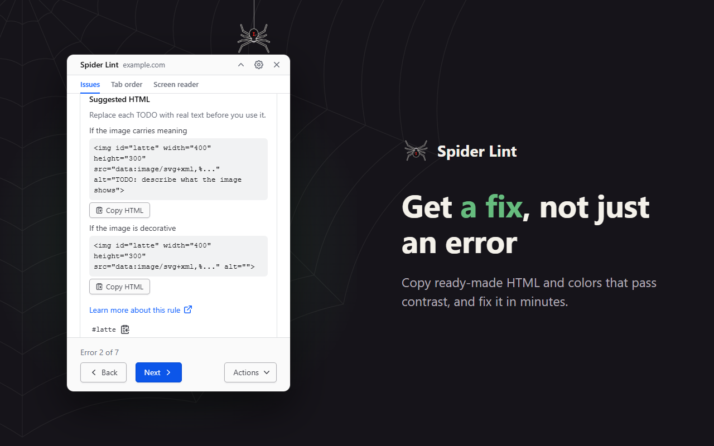
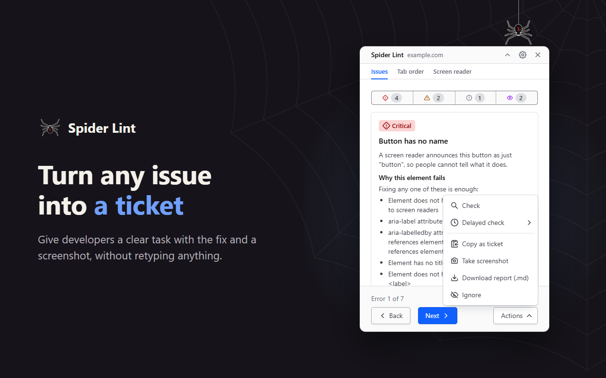
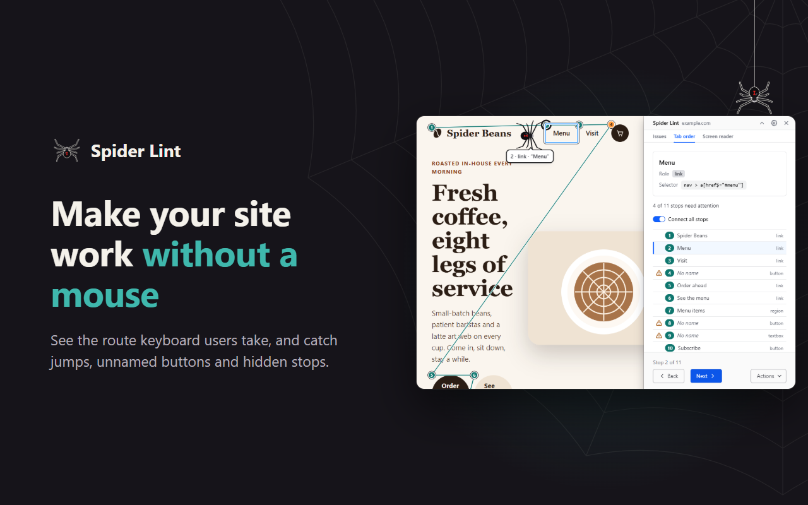
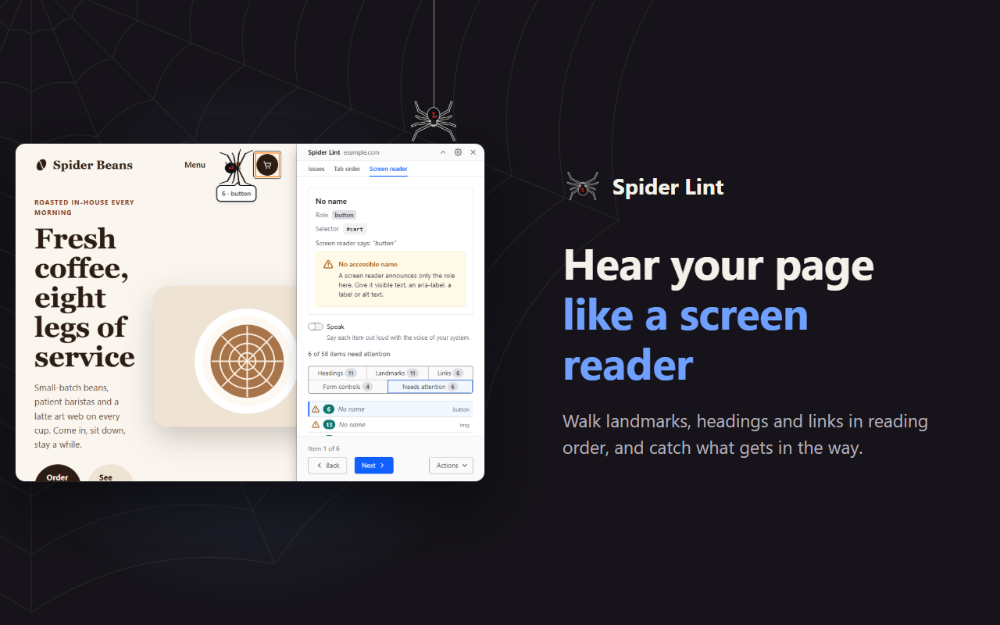

Watch a spider find every issue
It highlights the failing element right on the page. Press the arrow keys to walk to the next one, Esc to close the panel.

Chrome extension · WCAG 2.0 – 2.2
Spider Lint walks to every failing element on the page, explains why it fails, and hands you the fix: ready HTML, passing colors and a Markdown ticket.
See it in action
Press Check. The spider crawls to each issue, and the arrow keys take it further.
Features
It highlights the failing element right on the page. Press the arrow keys to walk to the next one, Esc to close the panel.

Each issue comes with a plain explanation, suggested HTML to copy, and text and background colors that pass contrast.

Copy a Markdown ticket for the current issue with a cropped screenshot, or download one report for the whole page.

The Tab order view numbers every stop, draws the keyboard route, and finds focus that jumps backward, stops without a name and stops that stay hidden.

The Screen reader view lists landmarks, headings, links and controls in reading order with what a screen reader says, speaks them out loud, and flags missing names, skipped headings and content outside landmarks.

A line sweeps down the page while the check runs, so you see it working.
Level A, AA, or AA and AAA with best practices.
Drag and pin the panel, or dock it to any edge and move the page aside.
Re-checks after a route change. Check in 3 s catches menus and dialogs.
Privacy
The script runs only on the tab whose icon you clicked. No accounts, no ads, no analytics. Settings and the ignore list stay in Chrome’s local storage.
Get started
Add Spider Lint from the Chrome Web Store and pin it to the toolbar.
Any site works, including localhost, staging and pages behind a login.
Click the spider icon, then Check. The spider walks to the first issue.
FAQ
Spider Lint runs the same axe-core engine, then shows each issue right on the page, suggests ready HTML and passing colors, and exports Markdown tickets. It also adds the Tab order and Screen reader views.
It checks the page open in the current tab. On a single-page app, check again after a route change.
No automated tool can. Spider Lint finds the issues a machine can prove. Test with a keyboard and a screen reader too: the Tab order and Screen reader views help there.
Chrome. Edge, Brave and other Chromium browsers can install it from the Chrome Web Store too.
Chrome does not let extensions into chrome:// pages, the Web Store or
PDFs. The toolbar icon shows the reason.
Yes. No accounts, no ads and no paid plan.